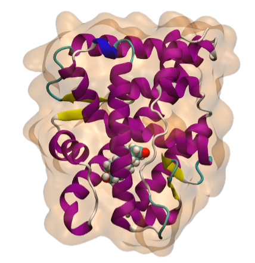

Welcome
I'm a PhD student using computational chemistry to study biological systems. This blog shares notes, methods, and research updates.

Recent Posts
-
June 15, 2026
Running Simulations with AMBER
Small tutorial on how to use ambertools26, sander, and pmemd...